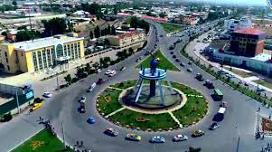
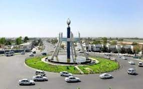
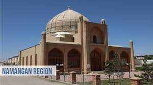

Namangan |
|||||
| Namangan |
Namangan
|
||||
| Toshkent | |||||
| Buxoro | |||||
| Samarqand | |||||
| Navoiy | |||||
| Farg'ona | |||||
| Jizzax | |||||
| Xorazm | |||||
| O'zbekiston | |||||
| Qashqardaryo | |||||
| Sirdaryo | |||||
| Surxandaryo | |||||
| Andijon | |||||
Namangan Vikipediya, ochiq ensiklopediya Navigatsiya qismiga oʻtishQidirish qismiga oʻtish Namangan shahar Namangan Airport.jpg 40°58′0″N 71°34′0″E G OKoordinatalari: 40°58′0″N 71°34′0″E G O Mamlakat Oʻzbekiston viloyat Namangan viloyati Hukumat Asos solingan 1610 Ilk eslatilishi XV Maydon 91 km2 (35 mi²) Markazi balandligi 476 m Rasmiy til(lar)i oʻzbek Aholisi (2017) 597,4 ming Milliy tarkib oʻzbek, rus, tojik,qirgʻiz,koreys,qozoq va hk. Konfessiyaviy tarkib Musulmonlar, Xristianlar v.h Vaqt mintaqasi UTC+5 Telefon kodi +998 69 Pochta indeks(lar)i 130100 — 130117 Avtomobil kodi 16 (eskisi 1998—2008), 50 - 59 (yangisi 2008) Namangan xaritadaNamanganNamangan Namangan — Namangan viloyatidagi shahar. Viloyatning maʼmuriy, iqtisodiy va madaniy markazi Aholi soni boʻyicha Fargʻonadan oldingi oʻrinda. Oʻzbekistonning yirik shaharlaridan biri. Fargʻona vodiysining har jihatdan peshqadam viloyati. Vodiyning shim.da, Shim. Fargʻona kanali bilan Namangansoy kesishgan yerda, 450 m balandlikda joylashgan. Maydoni 83,3 ming km². Iyulning oʻrtacha temperaturasi 26,3°, yanv.niki —2,3°. Aholisi 600 ming kishi atrofida (2018).[1] Fargʻona vodiysining qad. poytaxti Axsikat (Axsikent) 1620-yildagi qattiq zilzila natijasida vayron boʻlganligi sababli, uning aholisi hozirgi Namangan shahri hududiga koʻchib oʻtgan. Namangan tuz koni ("Namak kon") yaqinida vujudga kelgan boʻlib, shahar nomi oʻrta asrlarga oid tarixiy xujjatlarda birinchi marta tilga olinadi. Zahiriddin Bobur oʻzining "Boburnoma" (16-asr) asarida Namangan qishlogʻi haqida gapirib oʻtgan. V. P. Nalivkinning ("Qoʻqon xonligining qisqacha tarixi", Qozon, 1886) yozishicha, Namangan 1643-yilga mansub vaqf hujjatlarida uchraydi. 18-asrda Namangan Qoʻqon xonligiga tobe boʻlgan. Biroq viloyatni boshqaruvchi bek qarorgohi sifatida oʻz ahamiyatini saqlab qolgan. U faqat shahar aholisigina emas, balki atrofdagi tumanlar aholisiga ham xizmat qiluvchi hunarmandchilik markazi boʻlgan. Dehqonlar Namangan bozorlarida ip va gazlamalar, mis idishlar, zargarlik buyumlari va mehnat qurollarini sotib olishgan. Shaharda meʼmorlik sezilarli darajada taraqqiy etgan. Xoʻja Amin maqbarasi (17-asr), Mulla Qirgʻiz madrasasi (1911-12) va Ota Valixon toʻra masjidi (20-asr) kabi meʼmoriy yodgorliklari hozir ham mavjud. 1817—22 yillarda Namangan aholisi kuchi bilan katta Yangiariq kanali qazilib, suv taʼminoti yaxshilandi. 1842—45 yillarda shahar baland devor bilan oʻrab olingan. 1813—14 yillarda Namanganga kelgan rus ofitseri F. Nazarov bu yerda shahar hokimining devor bilan oʻralgan saroyida ancha katta garnizon borligini aniqlagan. Qoʻqon xonligi hukmronligining soʻnggi kunlarigacha Namangan bek qarorgohi boʻlib keldi. Turkiston general-gubernatorligi tarkibida Fargʻona maʼmuriy viloyati tuzilgach, Namangan uning uyezd shaharlaridan biriga aylandi. 1894—95 yillarda uyezd muassasalari uchun davlat binolari qurishdi. 20-asrning boshlarida Namangan Oʻrta Osiyoning "eski" va "yangi" qismlardan iborat tipik shahriga aylandi. 1912-yilda shaharga Qoʻqon tomonidan temir yoʻl oʻtkazildi. 1914-yil zavodlar soni 17 taga yetdi. Bundan tashqari, 2 yogʻ zavodi ham qurildi. Shahardagi har ming kishidan 22 tasi sanoat ishchisi boʻlgan. 1916-yilda Namanganda Nikolay II ning mardikorlikka olishi haqidagi farmoniga qarshi mehnatkashlarning chiqishi boʻldi (qarang Mardikorlik). Bolsheviklarning bosqinchilik urushi davrida Namangandagi korxonalarning qariyb 80%ida ish toʻxtab qoddi. Urushdan keyin sanoat korxonalari tiklanib, rivojlana boshladi. Motor taʼmirlash, sut-yogʻ, konserva, gʻisht, paxta tozalash zavodlari, non kombinati, elektr stansiyasi va bir qancha mayda mahalliy sanoat korxonalari ishga tushirildi. Viloyatda paxtachilik, pillachilik va qishloq xoʻjaligining boshqa tarmoqlari rivojlanishi shaharda keng isteʼmol buyumlari va oziq-ov-qat mahsulotlari sanoatining rivojlanishiga sabab boʻldi. Shu davrda shaharda 3 elektr stansiya, vino va pivo zavodlari, yigiruv-toʻquv fabrikasi, taʼmirlash-mexanika ustaxonasi qurildi. Sanoatning yalpi mahsuloti yildan-yilga ortib bordi. Ikkinchi jahon urushi yillarida shaharda poyabzal fabrikasi, tikuvchilik korxonasi, goʻsht kombinati, mahalliy va kooperativ sanoat korxonalari ishga tushirildi. Urushdan keyin yengil, oziq-ovqat, ogʻir, kimyo, metallsozlik, elektrotexnika va kurilish sanoatlari rivojlandi. Shaharni elektr energiya bilan toʻla taʼminlash maqsadida 1946-yil Namangansoyda 2-GES kurildi. 1949-yilda markaziy ekskavator stansiyasi tashkil etilib, bu yerda turli xil ekskavator, skreper, buldozer kabi qishloq xoʻjaligi mashinalari taʼmirlandi. Oʻrta Osiyoda yagona elektrotexnika zavodi (sanoatda va roʻzgʻorda ishlatiladigan) elektr isitkich asboblari ishlab chikara boshladi. Namangan respublikaning yengil va oziq-ovqat sanoatlari markazlaridan biriga aylandi. Bu yerda Oʻzbekistonning toʻqimachilik mahsulotlarining 15%ini ishlab chiqaruvchi yirik toʻqimachilik korxonalari qurildi.
Shaharda 36 qoʻshma korxona mavjud. Shulardan, Oʻzbekiston—Yaponiya "Silk Road", Oʻzbekiston—Shveysariya "Nestle", Oʻzbekiston — Turkiya "AsnamTekstil" va boshqa qoʻshma korxonalarning hissasi salmoqlidir. "Atlas", "Notoʻqimachi", "Namangangoʻshtsutsanoat", "Namanganekstraktyogʻ", "Namanganmebel", "Namangandonmahsulot", "Mehmash", "Karbonam", korxonalari faoliyat koʻrsatmoqda. Shaharda 400 dan ziyod kichik va oʻrta biznes subʼyektlari bor. Mustaqillik yillarida shahar butunlay oʻzgarib ketdi. Ilgarigi tor koʻchalar oʻrnida keng va ravon yoʻllar bunyod etildi. "Boburshoh", "Doʻstlik", "Margʻilon", "Oromgoh", "Uychi" koʻchalari tubdan qayta taʼmirlandi. Namangan azaldan oʻzining hunarmandchiligi bilan nom qozongan. Shaharning turli burchaklarida kichik bozorchalar boʻlib, hunarmandlar, savdogarlar, dehqonlar oʻz mahsulotlarini ana shu bozorchalarda sotishgan. Keyingi 10 yil ichida bu bozorlar oʻrnida "Chorsu", "Doʻstlik", "Taxtakoʻprik", "Shohbekat", "Jahon" singari zamonaviy bozorlar qad koʻtardi. Shahar markazida Amir Temur, Bobur xiyobonlari, "Tinchlik" maydoni, "Adiblar xiyoboni", Mashrab nomidagi bogʻ bunyod etildi. Adiblar xiyobonida Boborahim Mashrabning haykali va boshqa namanganlik shoir va yozuvchilarning bryustlari o'rnatildi. Bobur bogʻi hududida "Xotira" maydoni barpo qilindi. Boburshoh koʻchasida akademik litseyning oʻquv binosi va yotoqxonasi, Doʻstlik koʻchasida transport-aloqa kollejining binosi qurib foydalanishga topshirildi. Sanʼat, madaniyat, tibbiyot, sanoat kollejlarining binolari tubdan qayta taʼmirlandi va jihozlandi. Shahar markazida tez tibbiy yordam koʻrsatish markazi, endokrinologiya, "Ona va bola" markazlari, koʻpgina mahallalarda ambulatoriyalar ishga tushirildi. Aksariyat mahallalarda guzarlar qurildi. Shaharda 21 avtotransport va 7 aloqa korxonasi, 48 yirik qurilish korxonalari mavjud. Transport vositalari qatnaydigan koʻchalarining uz. 1010 km. Trolleybus qatnovi yoʻlga qoʻyilgan. Xalqaro Aeroport bor. Viloyat tumanlariga avtobuslar qatnaydi. Shaharga "Oʻzdunrobita", "Kamalak — TV" va "DEU Yunitel" qoʻshma korxonalari xizmat kursatmoqda. Namanganda 38 yirik savdo korxonasi va koʻpgina savdo va maishiy xizmat koʻrsatish shoxobchalari mavjud. Namangan respublikaning fan va madaniyat markazlaridan biri. Shaharda universitet, 2 institut, 10 kollej, 2 kasb-hunar maktabi, 2 akademik litsey, iqtisodiyot litseyi, 51 umumiy taʼlim maktabi, 53 maktabgacha tarbiya muassasasi bor. 2002/2003 oʻquv yilida universitet va institutlarda 11129, oʻrta maxsus oʻquv yurtlarida 10630 talaba, kasb-hunar maktablarida 498, litseylarda 1608, umumiy taʼlim maktablarida 76801 oʻquvchi taʼlim oldi. Shaharda 2 teatr, bolalar qoʻgʻirchoq teatri, 27 jamoat kutubxonasi, 5 klub, 4 madaniyat va istirohat bogʻi, 2 madaniyat saroyi, 6 madaniyat uyi, 5 muzey, 2 bolalar musiqa maktabi mavjud (2003). 5 sport maktabi, bir qancha stadion va suzish havzalari mavjud. Yangi Namangan 2021-yil 5-mart kuni boʻlib oʻtgan Xalq deputatlari viloyat kengashining navbatdagi sessiyasida Namangan shahri tarkibida yana bir tuman — Yangi Namangan tumani tashkil etilishi maʼlum qilingan. Ushbu tumanning umumiy yer maydoni 8223 gektarni tashkil etadi. Tuman tarkibiga shahardagi 24 ta mahalla hududini oʻtkazish rejalashtirilgan. Ushbu mahallalarda bugungi kunda 145 ming kishi istiqomat qilib keladi[2]. Vazirlar mahkamasi tomonidan 2021-yil 8-may kuni „Namangan viloyatining Namangan shahri tarkibida Yangi Namangan tumanini tashkil etish bilan bogʻliq tashkiliy masalalarni hal etish chora-tadbirlari toʻgʻrisida“gi qarori qabul qilindi[3]. Qarorga muvofiq, Namangan shahri tarkibida Yangi Namangan tumani hokimligi tashkil etildi. Hujjatda tumanda qoʻshimcha shtat birliklari ajratilgan holda adliya boʻlimi, davlat xizmatlari markazi va fuqarolik holati dalolatnomalarini yozish organlari tashkil etilishi qayd etilgan[4]. Manbalar "Namangan" OʻzME. N-harfi Birinchi jild. Toshkent, 2000-yil „Наманган шаҳри таркибида яна бир туман ташкил этилади“. Bugun.uz. 15-iyul 2021-yilda asl nusxadan arxivlandi. Qaraldi: 2021 йил 5 март. Arxivlandi 2021-07-15 Wayback Machine saytida. „„Namangan viloyatining Namangan shahri tarkibida Yangi Namangan tumanini tashkil etish bilan bogʻliq tashkiliy masalalarni hal etish chora-tadbirlari toʻgʻrisida“ Oʻzbekiston Respublikasi Vazirlar Mahkamasining qarori“. Lex.uz. Qaraldi: 2021-yil 8-may. „Янги Наманган тумани ҳокимлиги ташкил этилди“. Bugun.uz. 15-iyul 2021-yilda asl nusxadan arxivlandi. Qaraldi: 2021-yil 10-may. Arxivlandi 2021-07-15 Wayback Machine saytida. [yashir]vte Oʻzbekiston shaharlari Poytaxt Toshkent Shaharlar Andijon Angren Asaka Bekobod Beruniy Buxoro Chimboy Chirchiq Fargʻona Guliston Gʻijduvon Gʻuzor Jizzax Juma Kattaqoʻrgʻon Kogon Kosonsoy Margʻilon Moʻynoq Namangan Navoiy Nukus Nurota Olmaliq Qarshi Qorakoʻl Qorasuv Qoʻngʻirot Qoʻqon Rishton Samarqand Shahrisabz Shirin Sirdaryo Termiz Toʻrtkoʻl Toʻytepa Uchquduq Urganch Urgut Vobkent Xiva Xoʻjayli Yangiobod Yangiyer Yangiyoʻl Zarafshon Turkum: Koordinatalar VikimaʼlumotlardaOʻzbekiston shaharlariNamangan Navigatsiya Siz tizimga kirmagansiz Munozara Qoʻshilgan hissa Hisob yaratish Kirish MaqolaMunozaralotin/кирилл MutolaaTahrirlashManbasini tahrirlashTarix Qidiruv Vikipediyadan qidirish Bosh Sahifa Tanlangan maqolalar Yangi sahifalar Tasodifiy maqola Maqolalar indeksi Loyihaga koʻmak Ishtirok Xato haqida xabar berish Yangi oʻzgarishlar Jamoa portali Qoidalar Yordam Forum Aloqa Asboblar Bu yerga ishoratlar Bogʻliq oʻzgarishlar Maxsus sahifalar Doimiy havola Sahifa haqida maʼlumot Sahifadan matn parchasi ajratish Vikimaʼlumotlar bandi Nashr/eksport qilish PDF sifatida yuklash Bosma uchun versiya Boshqa loyihalarda Vikiombor Boshqa tillarda العربية English Español Bahasa Indonesia Qaraqalpaqsha Русский Türkçe اردو 中文 Yana 54 ta tilda Ishoratlarni tahrirla Bu sahifa oxirgi marta 20-May 2022, 14:09 da tahrir qilingan. Matn Creative Commons Attribution-ShareAlike litsenziyasi boʻyicha ommalashtirilmoqda, alohida holatlarda qoʻshimcha shartlar amal qilishi mumkin (batafsil).
